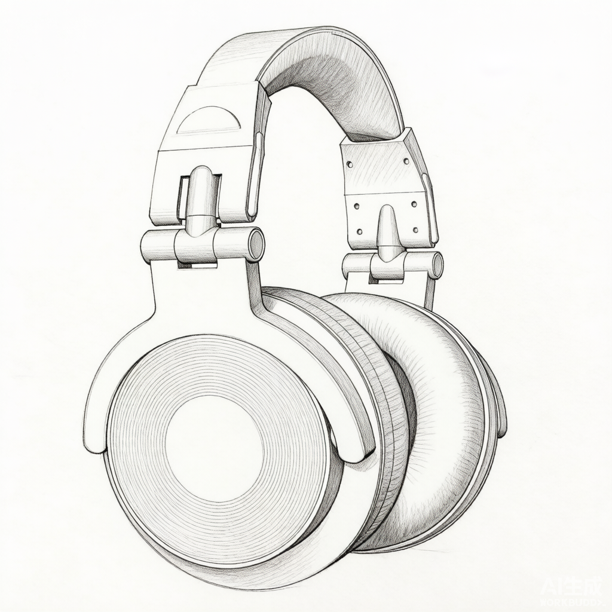
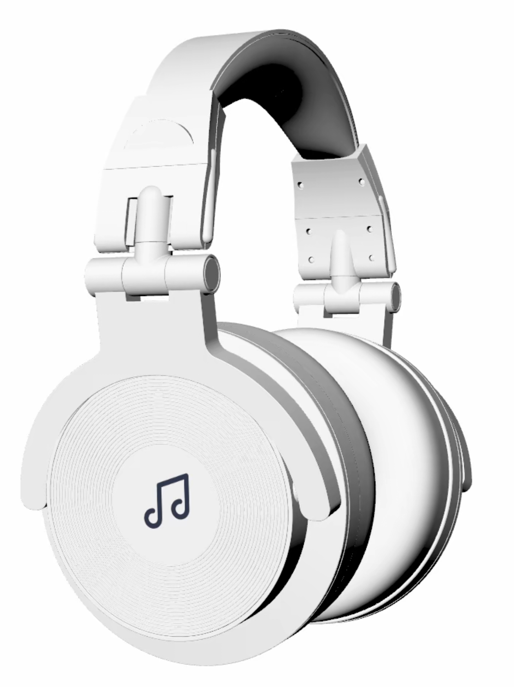

03 / Headphones
头戴式监听耳机
一款面向音乐制作人与音频工程师的头戴式监听耳机。核心目标是让 2-4 小时的连续佩戴不再成为负担，同时保留专业监听所需的密封感与可维护性。
JD 能力映射

01 / 项目目的
长时间佩戴的"热、重、夹"
- 痛点：监听耳机普遍存在「夹头、闷热、头梁压迫」——为隔音做紧耳罩、为音质做重大单元、为耐用缺缓冲，2 小时以上混音被放大。
- 项目目的：在「专业密封」与「持久舒适」之间找平衡，让 2–4 小时连续佩戴不再成为负担。
8
位音乐制作人访谈
75%
每天佩戴超过 2 小时
62%
因闷热中断工作
50%
耳罩破损后难替换
02 / 用户调研
头型数据与佩戴路径
- 方法：12 位用户头围/耳廓/头顶曲线测量 + 8 位音乐制作人访谈。
- 洞察：头梁压力集中在头顶正中与太阳穴；耳罩闷热来自蛋白皮与不透气填充。
- 方向：头梁分散压力（非简单加厚）｜耳罩透气织物 + 隔音记忆海绵｜弹性金属片提供可恢复夹力。
“耳机音质再好，戴一个小时就头疼，我也不会用它工作。舒适和音质必须并列第一。”
用户访谈 · 独立音乐制作人小林03 / 概念方案
三种佩戴结构
- 发散：围绕「舒适 + 隔音 + 可维护」三条线，尝试三套结构方案。
- 取舍：A 一体式记忆头梁（不可维护放弃）｜C 耳挂式开放监听（隔音不足放弃）｜B 悬挂式头梁（保留：舒适·可维护·专业）。
方案 A · 一体式记忆头梁
头梁与耳罩一体注塑，造型简洁。但耳罩不可更换，维护性差。
放弃原因：不可维护
方案 B · 悬挂式头梁（最终）
双层头梁：外层金属骨架提供夹力，内层织物吊带分散头顶压力；耳罩磁吸可拆。
保留原因：舒适、可维护、造型专业
方案 C · 耳挂式开放监听
开放式耳罩，透气但隔音差，不适合专业监听环境。
放弃原因：隔音不足

04 / 设计迭代
从 Clay 模型看比例
- 素模验证：1:1 Clay 模型验证耳罩尺寸、头梁开合角度与压力分布，三轮迭代解决贴合与压迫矛盾。
- 纠偏：第一轮耳罩 105mm 与颧骨干涉 → 第二轮改 95×85mm 椭圆贴合亚洲耳廓 → 第三轮吊带改两侧分散，压力峰值降约 40%。

Clay 模型验证记录
- 第一轮：耳罩外径 105 mm，与颧骨干涉。用户反馈佩戴 10 分钟即想摘下。
- 第二轮：改为 95×85 mm 椭圆，贴合亚洲用户耳廓，侧躺不再顶脸。
- 第三轮：头梁吊带弧度从正中单点改为两侧分散，压力峰值下降约 40%。
05 / 最终方案
双层悬挂，磁吸耳罩
- 形态：哑光黑铝合金骨架 + 米色织物吊带；磁吸快拆耳罩（透气针织布 + 慢回弹记忆海绵 + 蛋白皮）；隐藏式金属弹片头梁。
- 要点：双层头梁（金属承重·织物分压） / 磁吸耳罩 5 秒更换 / 透气面料降闷热 / 无外露螺丝。
06 / 验证与沉淀
1 小时佩戴测试
- 测试：6 位目标用户同音量同室温分别佩戴原型与竞品 1 小时。
- 结果：舒适度 4.6/5 · 闷热感 -38% · 100% 可快速换耳罩（详见数据卡）。
- 沉淀/优化：调整吊带初始张力。
4.6/5
舒适度评分
-38%
闷热感下降
100%
可快速更换耳罩
1
优化点：吊带初始张力